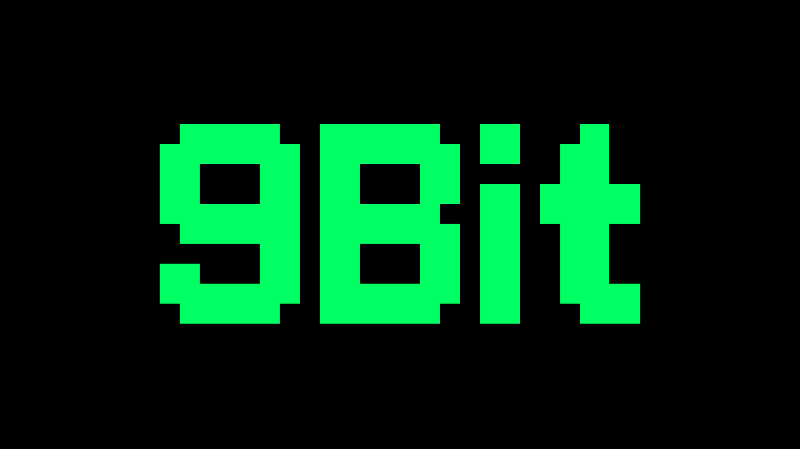

GAMEPLAY TRAILER / SCREENSHOT
Game Developer & Designer
Unity, C#, Photoshop
3 Months
9-Bit is a fast-paced 2D platformer that explores the boundaries of retro aesthetics mixed with modern physics-based movement. The core mechanic revolves around precise timing and navigating treacherous environments while solving environmental puzzles.
Developing this required building a custom movement controller from scratch to ensure the player character felt perfectly responsive, combining classic pixel-art philosophies with smooth, high-framerate animations.